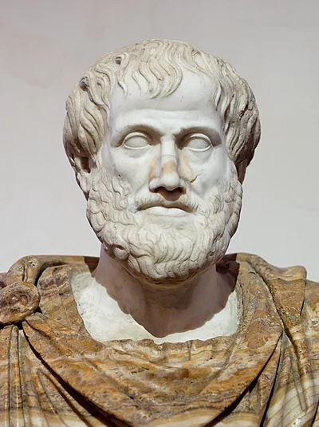
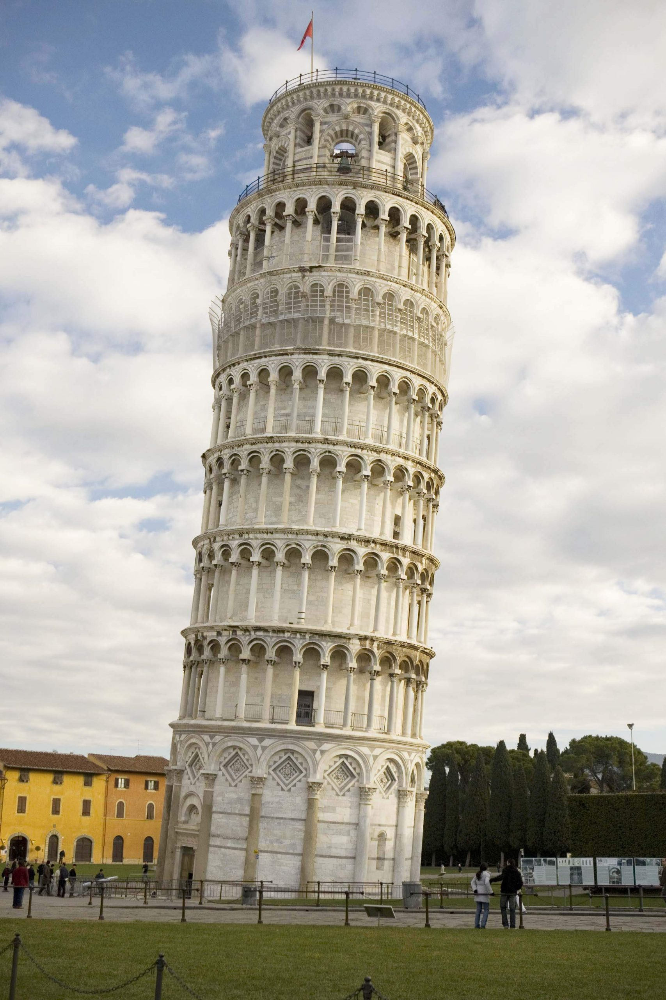

物理 ガイダンス
科学史
宗教上の教え
- 万能の唯一，神がこの世をお創りになった．
- 天体の運行は全て神の指示で動いている．
- その神の姿を写したとされる人間が住むこの地球こそが，宇宙の中心である．
- 地球が宇宙の中心なんだから，天体がその周りを回るのは当然なのだ．

アリストテレス
B.C. 384-322
- 地球は静止しており，他のすべての天体が地球の周りを回っている！
- 大きな石は小さな石よりも速く落ちるんだ！

ガリレオ・ガリレイ
A.D. 1564-1642
- 地球も回転しているのでは？
- 本当に大きい球の方が速く落ちているのだろうか？
- 自分の目で観察して確かめる！
物理学とは
- 自然界に見られる現象の法則性を実験または観測で見出し，数学を用いて記述する．
- 科学はこの宇宙という名の分厚い本の中に書かれていて， 私たちの目の前に開かれている．
しかし，そこに使われている言語を学び文字を解釈しなければ，誰もその内容を理解出来ない．その言語こそは数学である．『偽金鑑識官』（1623年）
物理学とは
- 自然界に見られる現象の法則性を実験または観測で見出し，数学を用いて記述する．
- 物理法則では，その正しさが測定の「不確かさ」の範囲で検証される（証明はされない）．
- 実験物理学者は，物理法則の適応範囲を日々実験によって拡張している．
ガリレオが提唱した「地動説」
- 地動説が有利に働く証拠の発見をした．
- 望遠鏡を用いて，地動説を発見！
- 月に凹凸がある．
- 木星の周りを回る4つの衛星がある．
→ 地球を中心に回っていない天体がある． - 金星に満ち欠けがある．
ガリレオが発見した「落体の法則」

ピサの斜塔から，重い鉄の玉と軽い鉄の玉を落とすと同じ時間で落ちることを証明した．
→ 自由落下に質量は関係ない！